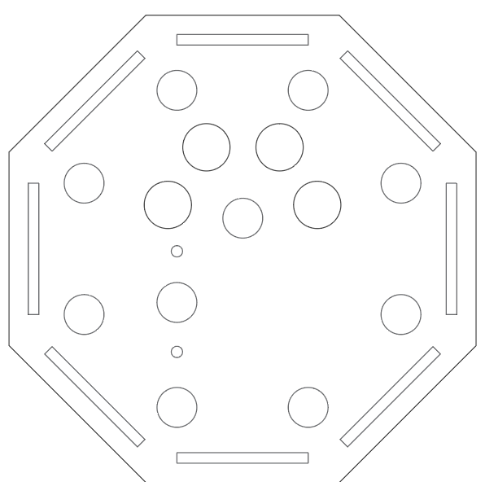
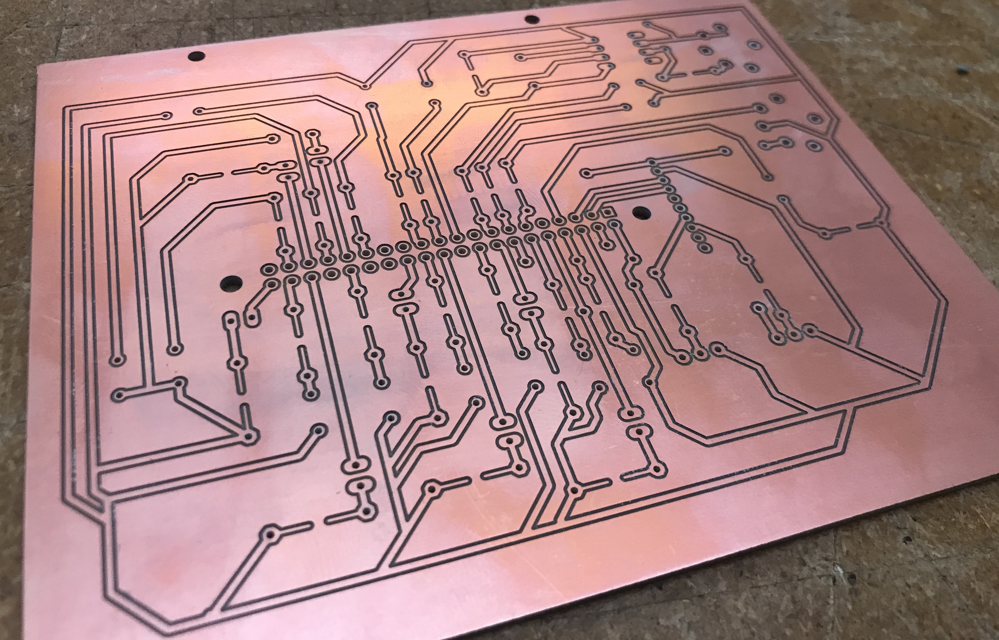
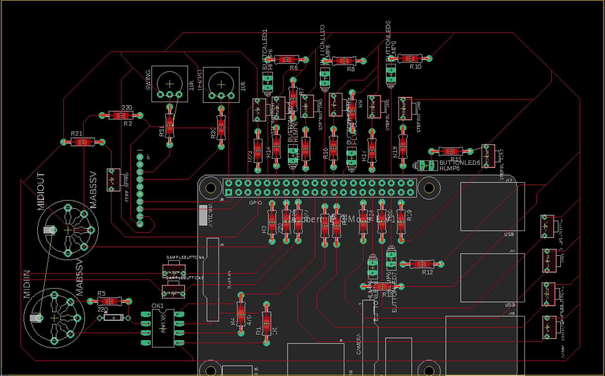

SeekFreek
Built:
December 2018


SeekFreek is an 8-Step MIDI sequencer constructed on a bare metal Raspberry Pi. As the final project for CS107e: Computer Systems from the Ground Up, I wanted to use MIDI protocol to be able to control an external MIDI instrument like a drum machine or keyboard.
Design
A friend challenged me to get rid of the typical step sequencer’s design of a box with a row of buttons, so I thought about how I could implement a circular design. However, with eight discrete steps on my sequencer, I wanted a shape that would better reflect that. So I sharpened the sides, and ended up with an octagon, with each step getting its own corner of the faceplate.
And of course, any hardware design can be improved with LEDs, so each step of the sequencer has a button with an LED mounted on top of it. The green LEDs mounted on the steps would be a way to indicate to the user where they were in the sequence, or check which steps each note was stored on.
Circuit
This project brought with it the densest circuit I have ever worked with. Each button would complete a connection between one of the GPIOs and ground. Each step’s LED would also complete a connection between ground and a GPIO, which could be toggled on or off. With so many connections and possible points of failure, I decided it would make sense to etch a printed circuit board rather than relying on potentially disastrous breadboard connections. The circuit allowed me to make my connections permanent, but it sure did take a LOT of time to make.
The circuit was designed using Autodesk’s EAGLE. I left holes for each header on the Raspberry Pi, spots for the MIDI connectors, through-hole resistors and a ground loop around the perimeter of the board. After getting all the components in place on the board design, I connected to Othermill, by Bantam Tools to etch the board. I gotta’ say, this desktop CNC is one cool machine…
Once I had the circuit, I soldered female headers for the Raspberry Pi to sit in. I soldered down all the resistors, followed by the wire connections:
Black Wire - Ground connection
Green Wire - Connected a button with a GPIO, to read when the button was pressed
Red Wire - Power to the Raspberry Pi via 5v in / Power to the LEDs via GPIO


The wires were all soldered to the proper GPIO connection, but left unconnected on the other side, until the housing was finished.
Housing

The housing was laser cut on acrylic. The octagonal faceplate had a matching baseplate and each edge had a wall holding it up. With ¼” acrylic, the walls were sturdy enough to have plenty of space for our Raspberry Pi, circuit and all connections. One of the walls had openings for two MIDI jacks, and another wall had space for a DC jack, for the Pi to receive 5v (definitely not 9v...trust me) from an external power source.

I knew I would want to have easy access to the circuit, so the faceplate had to be removable. The walls were bonded to the baseplate using acrylic cement. The faceplate was given holes so it could easily sit on the walls and stay in place, or removed for circuit access.
The buttons and MIDI jacks were connected, and then each wire finally connected to its respective component. Like I said, the entire circuit phase took up a HUGE amount of time. Since the project revolves around button presses and LED toggling, I had to finish designing, etching and soldering the circuit board before I could even begin coding. The circuit looked great, but with so much time spent without being able to test, I got lucky that most of the connections worked on the initial tests.


Software Design
For any physical hardware to be effective, it needs to be intuitive, responsive and have visual cues for the user. With software being the piece that ties it all together, I wanted to incorporate each of these aspects, making especially good use of the LEDs.
The core loop of the program does the following:
1. Light the LED that indicates the current step
2. Send all MIDI note messages stored on this note
3. Turn off LED for the current step
Implementing the core loop was relatively simple once the MIDI library was working. The course rested on bare metal programming: using the Raspberry Pi without an operating system or libraries. Luckily, MIDI messages are just a specific protocol for serial communication, so the MIDI library just sends a stream of bits to be interpreted on another device. Since each MIDI note message takes approximately 1/10,000 of a second to send, each message could be sent one right after another from the same port without any discernable delay in time.
However, the fun part about a sequencer is being able to change the notes stored at each step. Four buttons were each implemented as the “samples” to be sequenced. When the user presses a sample, the LEDs indicate which steps are currently holding that sample, so if your Hi-Hat is being played every step all of the LEDs will be lit up when you press the corresponding sample. Then, any step you pressed would toggle whether a note was stored at that specific point in the sequence (and toggle the corresponding LED immediately).
Since the steps would keep going around, each of these sample and step buttons had to be configured on interrupts, rather than forcing the program to be constantly reading the status of each GPIO. Whenever you pressed a sample button, it triggered an interrupt to set the sequencer to “write mode.” In write mode, the sample’s rhythm would be displayed on the step LEDs, and the moving LED would simply toggle the state of the LED on that step. This took a good while to properly map, but since the rhythm continues, I wanted to make it so the user would still know which step the sequencer was on.
Find my GitHub repository for this project here!
If you have any comments or suggestions, don’t hesitate to let me know! I’d love to hear what you think of SeekFreek!